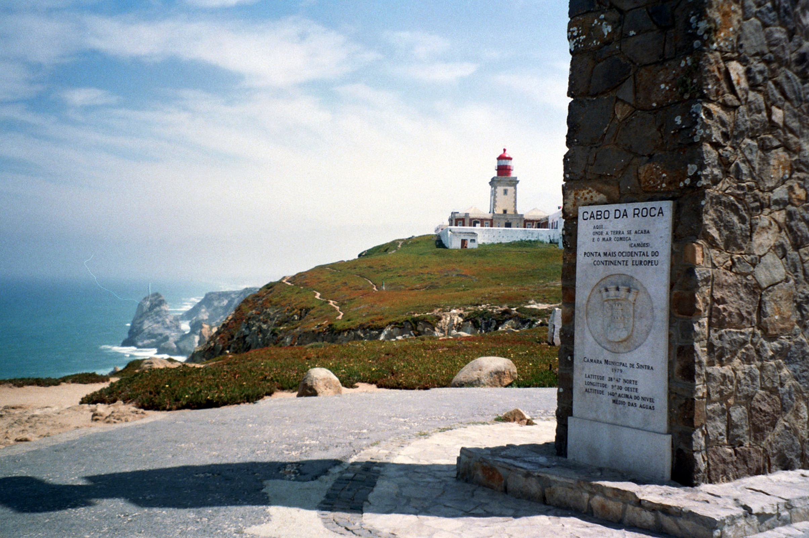
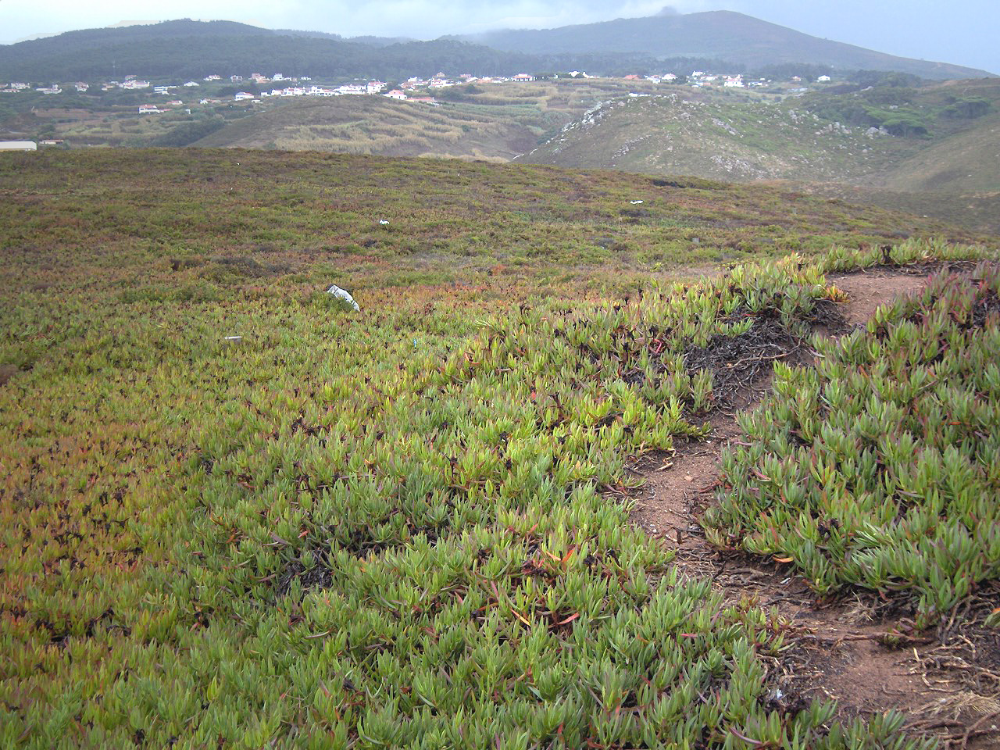

Granite boulders and sea cliffs along the coast
For the cape in Antarctica, see Cape Roca (Antarctica).
Cabo da Roca (português: [ˈkaβu ðɐ ˈʁɔkɐ]) ou Cape Roca is a cape which forms the westernmost point of the Sintra Mountain Range, of mainland Portugal, of continental Europe, and of the Eurasian land mass. It is situated in the municipality of Sintra, near Azóia, in the southwest of the district of Lisbon.
Contents
Cabo da Roca was known to the Romans as Promontorium Magnum and during the Age of Sail as the Rock of Lisbon.

Monument announcing Cabo da Roca as the westernmost point of continental Europe
The cape is within the Sintra-Cascais Natural Park, 42 kilometres west of the city of Lisbon and in the southwest of Sintra. A location (38°47′N 9°30′W) is inscribed on a stone plaque, located on a monument at the site.
The western coast is a mixture of sandy beaches and rocky cliff promontories: around Cabo da Roca, cliffs are more than 100 metres in height, and cut into crystalline rocks, composed of strongly folded and faulted sedimentary units. These forms are disturbed by dikes and small beaches. This promontory of "high" beaches is the extreme western immersion of the ancient eruptive Sintra massif, as evident from the rose-coloured granite in the north and syenite of the Ribeira do Louriçal in the south. In the vicinity of the Cape, there are geomorphological examples of gabbro-diorite, volcanic breccia, and granite.
Granite boulders and sea cliffs along the coast
Part of the granite formations show evidence of strong coastal erosion, while in other areas there are limestone deposits embedded in the granite.

Invasive Carpobrotus edulis growing on the cape plateau
Much of the vegetation on this cape is low-lying and adapted to saltwater and windy conditions. Once home to a variety of plant life, Cabo da Roca has been overrun with the invasive plant species Carpobrotus edulis. This creeping, mat-forming plant, a member of the Aizoaceae succulent family, was introduced as ground cover by local residents several decades ago, but now covers much of the arable land on Cabo da Roca.